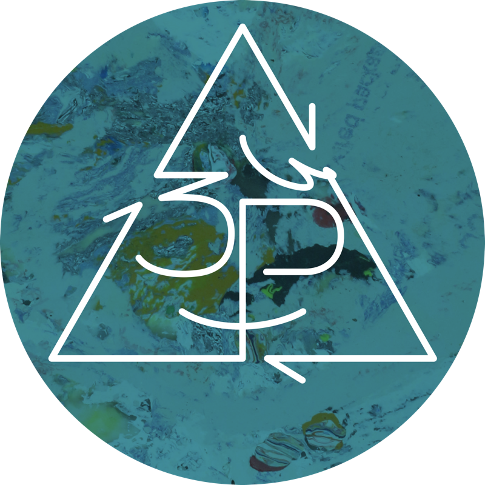

3P: People Processing Plastic
An Experiment in Plastic Reuse and Recycling: Passionate people performing practical plastic processing, producing prized products, preventing pollution proliferation, and progressing a pristine planet

Spontaneous Lamp
Designing with found materials; a lamp that doesn't exist? Foraged Bamboo, found rocks, unused 5 gallon bucket, clip-on lamp, and extension cord.


Slash: MICA Graduate 2022 Program Guide
Is less really more? We're using fewer pages, minimal ink coverage, and more succinct content to find out!

MICA Grad Admissions Mailer
Public domain imagery, open source typefaces, and clever printing tricks combine…

A Carbon Sequestering Book
What if a book could draw down carbon from the air?

Ecovention Europe
Can "Reduce" and "Reuse" be used as visually and conceptually meaningful design constraints?

Green Acres
How to represent sustainably focused artists and maintain a visually inventive book while avoiding tired "green design" clichés?

The Sustainabilitist Principles
What ways of thinking lead a designer to sustainable solutions?

The Rise of the Climate Designer: Lecture Poster
Do you need new materials and CMYK printing? Two color risograph on found paper.

Chesapeake Farm to Table
How do you visualize novel connections between local farmers and their nearby restaurant and home kitchens?

Five Seeds Farm & Apiary
What kind of website does an Urban Farm need?

Contact Wjerk
Phone: +1 (507) 301-8402
Email: bjornmeansbear@pm.me